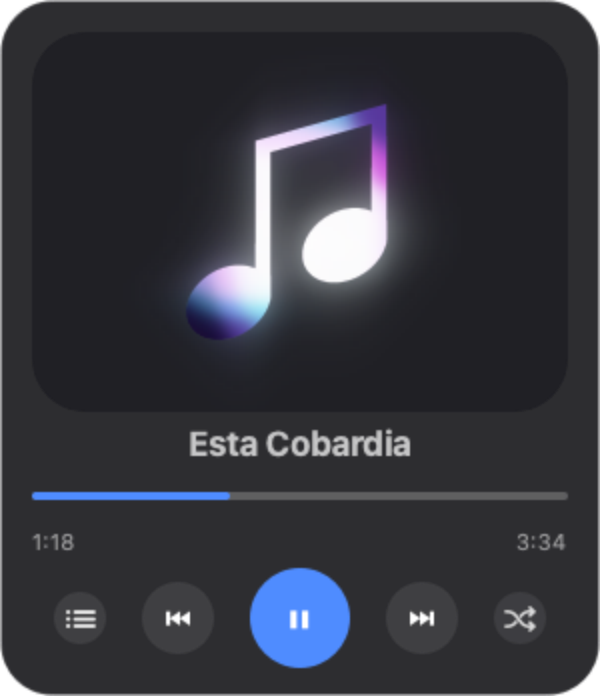
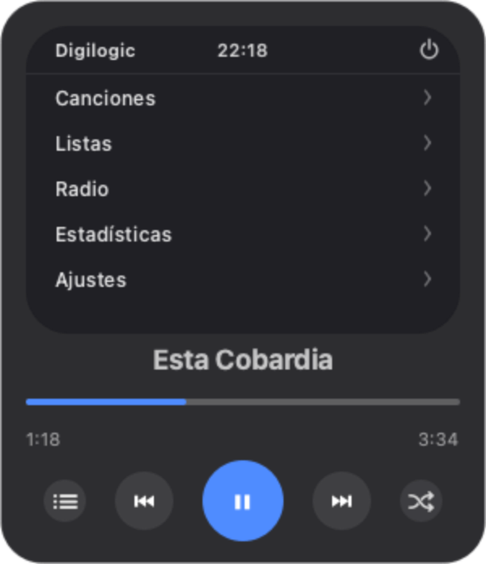
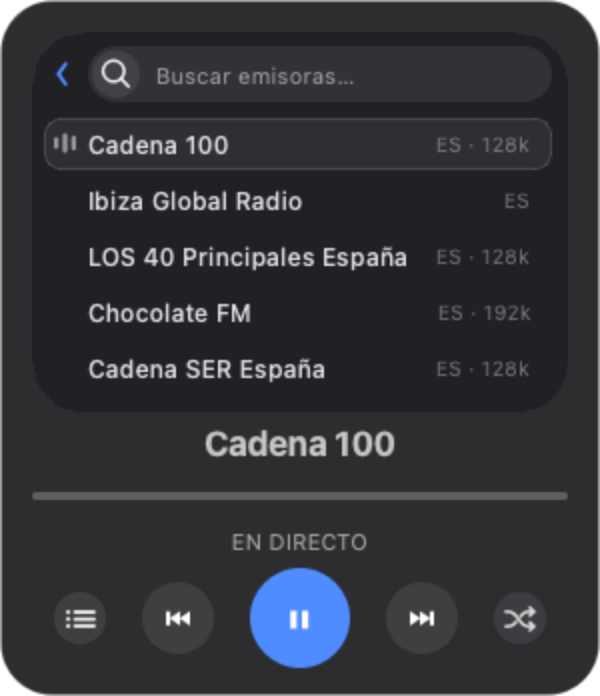
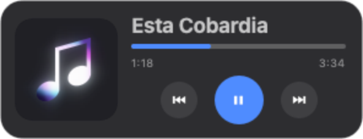

Fast and light
Starts instantly and stays out of the way. No unnecessary background processes.
A minimal, lightweight, offline MP3 player for your desktop.
macOS 13 Ventura or later · Apple Silicon
Windows 10 or 11 · 64-bit
Digilogic is an independent app, so it isn't code-signed: an Apple signature costs €99 a year and a Microsoft one is around €200. Without it, both systems warn you the first time. It doesn't mean there's anything wrong with the app, only that nobody has paid to have it identified.
If the warning says the app "is damaged", run this once in Terminal:
xattr -cr /Applications/Digilogic.app
A blue screen appears saying "Windows protected your PC". That's SmartScreen, and the button to continue is hidden:
You can read all the code on GitHub.



WHY DIGILOGIC
Everything you need to enjoy your local music. No subscriptions, no strings attached.
Starts instantly and stays out of the way. No unnecessary background processes.
Your music lives on your computer. No accounts, no subscriptions, no internet.
Digilogic is built in the open. Read the code, report bugs or contribute.
See the code on GitHub →HOW IT WORKS
Click the title, where it says "Choose a folder", and point it at your MP3s. It can even be a USB drive: Digilogic plays them from there, without copying or importing anything.
The three-line button opens your full list, with a search box at the top that filters as you type.
The window shrinks and moves to a corner of the screen, so you can leave it there while you work. Click it again to get the full size back.

FEEDBACK
Digilogic is built by listening to the people who use it. Everything gets read, and whatever makes it in is credited in the release notes.
Tell me what happens and on which system. The more specific, the sooner it's fixed.
Report a bug →A feature, a setting, a detail. Explain which problem it would solve for you.
Suggest an idea →Questions, opinions, or how you use it. No forms.
Start a conversation →Digilogic is free and open source, and it will stay that way. If you find it useful, you can support it with a coffee. What comes in goes, in this order, to: